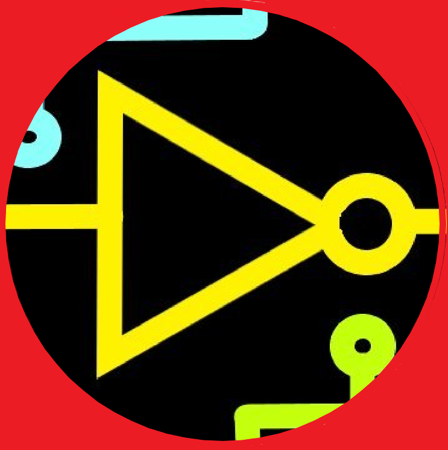
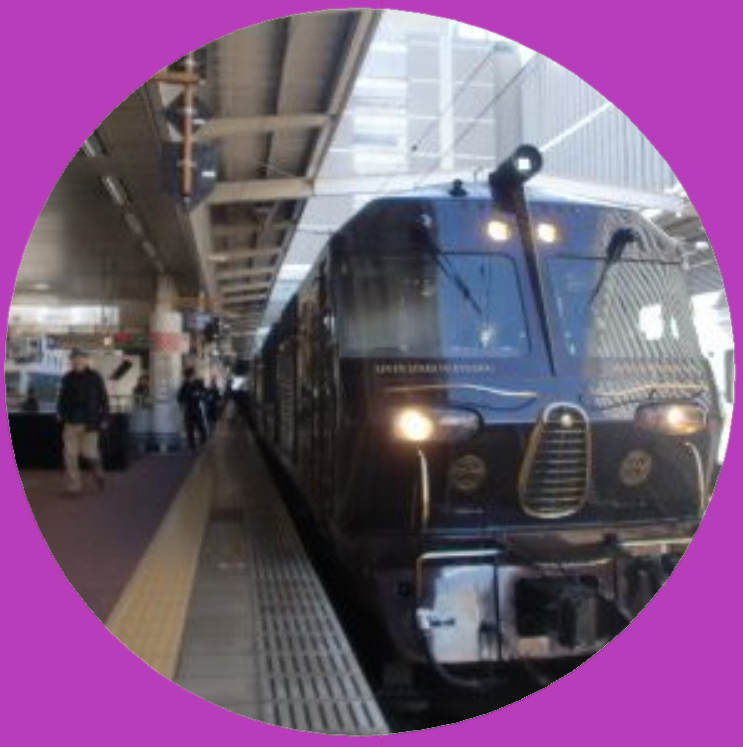

チームメンバー

たびとのtabi
担当：カメラ, 回路, プログラム

kk
担当：機体設計制作, プログラム

オーシャンアロー
担当：機体設計制作, プログラム
おしらせ
・2022/7/31：北九州オープンには選手として出場しないことが決定しました
・2022/7/31：(予告)たびとブログ「基板が届いたのでJLCPCB製基板の紹介とレビュー」
・2022/7/31：(予告)技術公開「DAISEN製 TJ3BLoader付 PICマイコンの使い方と回路作成」
・2022/7/31：ホームページを公開しました